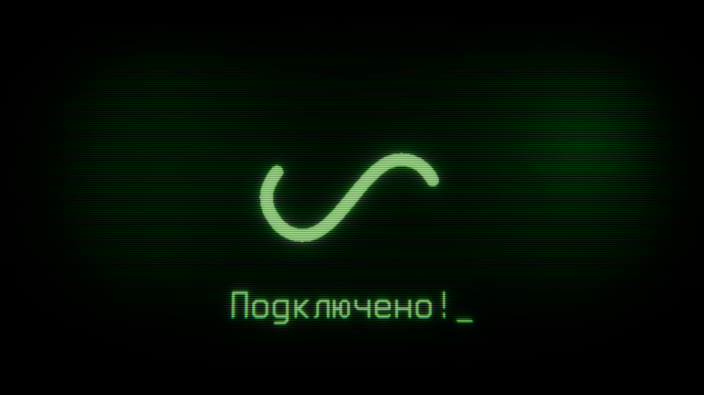
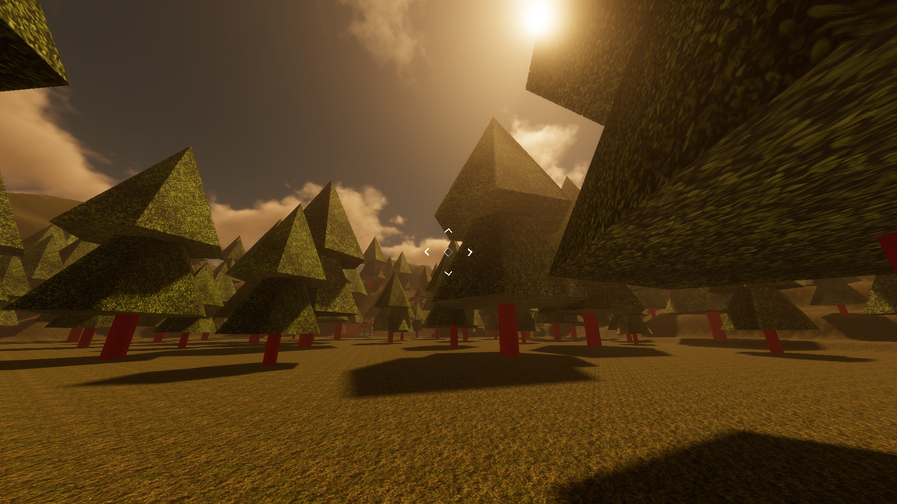

Зафиксирован нестабильный радио-сигнал, исходящий из глубин неизвестного источника.
Пространство вокруг выглядит "проваленным", как будто данные не полностью загружены в реальность.

Radio Interface Layer
Интерфейс передачи повреждён. Некоторые элементы UI выглядят как остаточные следы предыдущих трансляций.
Возможно, система продолжает работать без оператора.

Unknown Transmission Zone
Локация не совпадает с известными координатами.
Присутствуют признаки аномальной радиации сигнала и временных искажений.